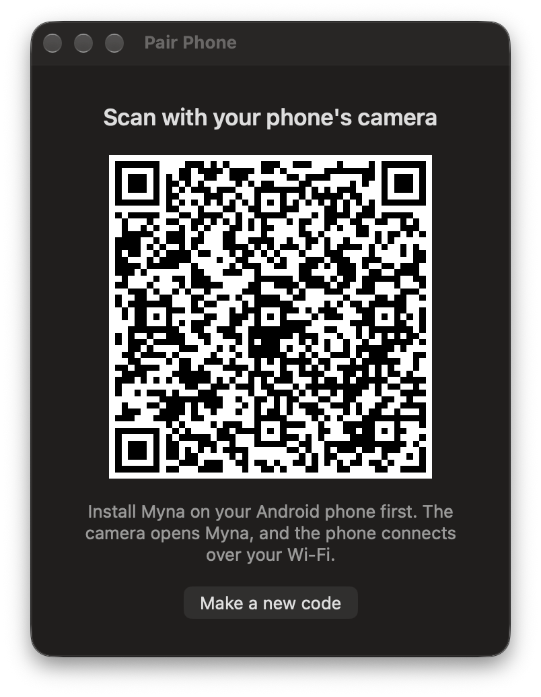

Set up once
Ready in five minutes
1
Install Myna on the Mac
Free download for Apple silicon and Intel, macOS 14 or later.
2
Install it on the phone and pair
Android 12 or later. Scan the code the Mac shows, once.
3
Add this extension
Then in Meet, pick Myna Front Camera and Myna Mic.
